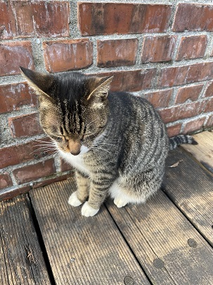
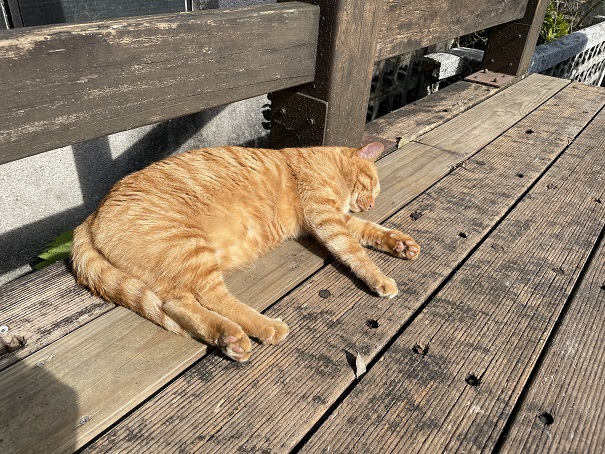
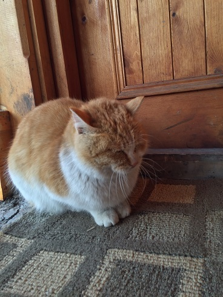
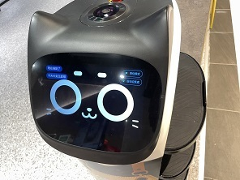

貓咪
瞇瞇眼
大胖橘

這隻貓咪是在
麻六甲聖保羅山
拍攝的
這隻貓咪會被叫瞇瞇眼的原因:
想睡覺了，太刺眼了
身體不好
很滿意現狀
毫無敵意

這隻貓咪是在
猴硐貓村
拍攝的
這隻貓咪會被叫大胖橘的原因:
胖橘形象出自《加菲貓》電影裡的加菲貓
貪吃懶惰，但是又可愛
圓圓腦袋
圓圓眼睛
圓滾滾
小釘鐺

這隻貓咪是在
哈爾濱東正教堂
拍攝拍攝的
這隻貓咪會被叫圓滾滾的原因:
很有威嚴
有如懷孕
野生東北豹
圓滾滾的

這隻貓咪是在
桃園某火鍋店
拍攝的
這隻貓咪會被叫小釘鐺的原因:
穿著圍裙的可愛貓咪造型
逗趣的聲音表情
互動點播唱恭喜發財
體驗新型態科技的用餐服務